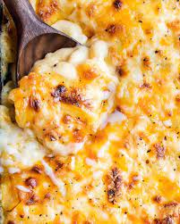

Mac and Cheese

Description:
Mac and Cheese is a timeless comfort food that has own the hearts of many.
Its creamy and velvety texture provides instant comfort and its golden hue and inviting aroma entice people of all ages.
The harmonious blend of smooth cheese and tender noodles delivers pure satisfaction in every bite.
Whether served as a side dish or the main attraction, mac and cheese brings a sense of warmth and nostalgia to any dining experience.
Its simplicity and comforting nature have made it a perennial favorite for gatherings, weeknight dinners, and laid-back Sundays.
Ingredients:
- 1 (8 ounce) box elbow macaroni
- 1/4 cup of butter
- 1/4 cup of all-purpose flour
- 1/2 teaspoon of salt
- Ground black pepper to taste
- 2 cups of milk
- 2 cups shredded Cheddar cheese
How to Make a Make and Cheese Step-By-Step:
- Bring a large pot of lightly salted water to a boil. Cook elbow macaroni in the boiling water, stirring occasionally until cooked through but firm to the bite, 8 minutes.
- At the same time, melt butter in a saucepan over medium heat.
- Add flour, salt, and pepper and stir until smooth, about 5 minutes.
- Pour in milk slowly, while stirring continuously. Continue to cook and stir until mixture is smooth and bubbling, about 5 minutes, making sure the milk doesn't burn.
- Add Cheddar cheese and stir until melted, 2 to 4 minutes.
- Drain macaroni and fold into cheese sauce until coated.
- Serve hot and enjoy!